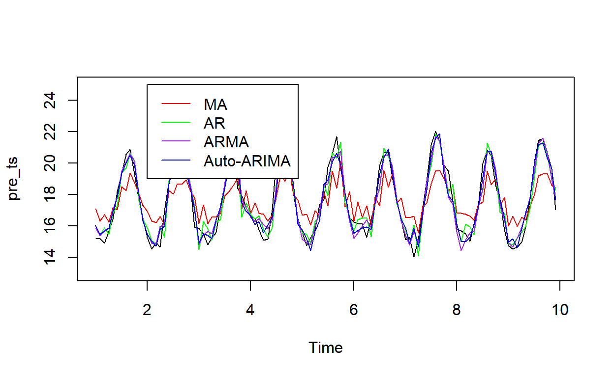

ARIMA Time Series Models For Ecologically Relevant Data
The goal of this tutorial is to introduce ARIMA (Autoregressive Integrated Moving Average) models for time series in a way that is digestible to new audiences, particularly those working in ecological fields, such as species distribution modelling, where understanding the patterns and projections of abiotic factors, such as sea surface temperature (SST) used as the example here. This tutorial will walk through theoretical foundations and assumptions of ARIMA models before moving on to the example on Southern California SST.
Time series are specific data that tracks samples through time. As used in our example here, the mean sea surface temperature (SST) for each day of a year is a time series. Simple regression techniques often do not preform well on time series because the error term is assumed to be distributed normally. This, however, is often not the case with time series due to something called autocorrelation. Autocorrelation is arises from the fact that values that are closer to each other in a time series are often closer to each other than values further along the series. This occurs in spatial data as well, which ecologists also often use. Going back to the SST data example, if SST was 22 °C on day one, it is more likely to also be 22 °C on day 2, than it is to jump to 25 °C. However, 90 days later, it would not necessarily be surprising it there was such a shift, as it is a new season.
ARIMA models are used to fit data from time series, helping to determine trends within the data. They are also useful in forecasting time series and used to predict future values (1). ARIMA models connect two different techniques for fitting time series data, AR (autoregression) and MA (moving average), along with flexibility in stationarity, that creates a more powerful model than when AR or MA models are used separately. They are 3 different parameters required from the modeler, p, q, and d. An ARIMA(p,d,q) model takes the form (2)
\[\begin{align} y_t &= c + \phi_1 y_{t - 1} + \text{...} + \phi_p y_{t - p} + \theta_1\epsilon_{t-1} + \text{...} + \theta_q\epsilon_{t-q} + \epsilon_t \\ &= c + \sum^p_{i = 1} \phi_i y_{t - 1} + \sum^q_{j = 1} \theta_j \epsilon_{t - j} + \epsilon_t \end{align}\]
where \(\phi \cdot y\) is the AR component, \(\theta \cdot \epsilon\) is the moving average component, and \(\epsilon_t \sim N(0,1)\).
The main assumption of the ARIMA models is that stationarity is required (2). This essentially means that the mean and variance of the time series must be constant. ARIMA does not always work best on seasonal data, unless there is no trend in the data. There are however, seasonal ARIMA models which can account for seasonality and are mostly beyond the scope of this tutorial. ARIMA models are able to achieve stationarity by a technique called differencing (discussed below).
The first component of the ARIMA model we will discuss is the AR (auto regression) component. AR models function very similarly to ordinary linear regression, where instead of the predictors being additional variables (x), they are the preceding values in the time series. Each preceding values are called a “lag”. The parameter for this component is p and determines the number of lags the model depends on. For example AR(1) is
\[\begin{align} y_t = c + \phi_1 y_{t - 1} + \epsilon_t \end{align}\]
where \(\phi\) is the coefficient, similar to \(\beta\) in ordinary linear regression. An AR(3) model would be
\[\begin{align} y_t = c + \phi_1 y_{t - 1} + \phi_2 y_{t - 2} + \phi_3 y_{t - 3} + \epsilon_t \end{align}\]
and AR(p) is
\[\begin{align} y_t = c + \phi_1 y_{t - 1} + \phi_2 y_{t - 2} + \text{...} + \phi_p y_{t - p} + \epsilon_t \end{align}\]
The second component of the ARIMA model we will discuss is the MA (moving average) component. This differs from AR models in that instead of using the previous values from the time series, it uses the errors from forecasting for prior values (2). The parameter for this component is q and also determines the number of lags, but of error values from forecasting. These error values are
\[\begin{align} \epsilon_t = \sum_{j = 1}^\infty (-\theta)^j y_{t-1} \end{align}\]
An example of an MA(3) model is
\[\begin{align} y_t = c+ \theta_1\epsilon_{t-1} + \theta_2\epsilon_{t-2} + \theta_3\epsilon_{t-3} + \epsilon_t \end{align}\]
and an MA(q) model is
\[\begin{align} y_t = c + \theta_1\epsilon_{t-1} + \theta_2\epsilon_{t-2} + \text{...} + \theta_q\epsilon_{t-q} + \epsilon_t \end{align}\]
where \(\theta\) is the coefficient, similar to \(\beta\) in ordinary linear regression.
The final feature of the ARIMA model is the ability to fit to the difference of the data. Differencing allows for the stabilization of the mean in a time series, and is done by taking the difference between consecutive data points in the time series.
\[\begin{align} y = y_t - y_{t - 1} \end{align}\]
This results in a time series with N - 1 data points. The parameter for this component is d and is equivalent to the number of differences required to obtain a stationary time series. A second order different results in
\[\begin{align} y = y_t - 2y_{t - 1} + y_{t - 2} \end{align}\]
The data used in this simple example is from USGS Western Fisheries Research Center and the US EPA Western Ecology Division, Pacific Coastal Ecology Branch (3). It contains monthly sea surface temperature (SST) data for the Western coast of the United States from 1981 to 2009. I am using the data from 2000 - 2008 to train the model and the data from 2009 to test predictions from the ARIMA model. I have filtered the data to the Southern California Bight and averaged the SST in the area to produce my time series.
sst = read_csv(here::here("data", "sst.csv")) %>%
mutate(date = paste(month, year)) %>%
mutate(date = my(date)) %>%
select(sst, date) %>%
arrange(date)
head(sst)# A tibble: 6 x 2
sst date
<dbl> <date>
1 16.1 1997-01-01
2 15.3 1997-02-01
3 15.7 1997-03-01
4 16.1 1997-04-01
5 18.1 1997-05-01
6 18.8 1997-06-01The first step is to turn our data into a time series object using the ts function in the tseries package (4). Additionally, we split our data into the two components - the training set for fitting the ARIMA model, and the testing set for comparing the ARIMA predictions.
This area is exposed to El Nino/La Nina cycles, but is not known for much overall temperature increase. All data wrangling will be done using the tidyverse (5) in R (version 4.1.3).
ggplot() +
geom_line(data = pre_sst, aes(date, sst), color = "blue") +
geom_point(data = pre_sst, aes(date, sst), color = "darkblue", size = 2) +
geom_line(data = post_sst, aes(date, sst), color = "red") +
geom_point(data = post_sst, aes(date, sst), color = "darkred", size = 2) +
theme_bw() +
labs(x = "Date",
y = "SST (°C)")Figure 1: Average SST in the Southern California Bight in 2000 - 2009
The seasonality caused by summer highs and winter lows is seen in the cyclical patterns in the data. Another way to visualize the data is to use the stl function in the tseries package (4) to break the time series into it’s three components: 1) seasonality, 2) trend, and 3) residual variance. Seasonality contains the consistent seasonal departures from the mean. Trend is calculated using a moving average.
Figure 2: Time Series Decomposition into the seasonal, trend, and residual components. The x axis is time in years
In the SST data, it appears there is a consistent seasonal departure from the mean of -2 °C in the winter and 3 °C in the summer. The average temperature is between 17.5 and 18 °C for the first 6 years and then becomes more variable in later years, showing some El Nino/La Nina cyclical patterns, with El Nino in years 8 and 10 and a La Nina in year 9.
In order to test the main assumption of the ARIMA model, stationarity, I use the adf.test function from the tseries package (4). This preforms an augmented Dickey-Fuller Test. If the p-value is > 0.05, the time series is stationary. For the SST time series from 2000 - 2008, our p-value is 0.11, indicating stationarity. Had the time series been significantly different from the assumption of stationarity, the next step would have been to test the first difference using the diff function. The number of differences required to achieve stationarity becomes the d parameter in the model.
In order to determine good values for the p and q parameters for the model, I will examine the ACF and P(artial)ACF plots. We look for which lag there is a significant drop in the ACF/PACF to estimate as our parameters.
Figure 3: ACF and PACF plot for the SST time series data
There is a significant drop in ACF after lag 1, so we estimate q as 1. For PACF, there is a drop after lag 2, so we estimate p as 2. For demonstration purposes, I will test three models:
Residuals are checked using the forecast package (4, 5) in order to determine model fit.
The three ARIMA models will be fit using the Arima function in the forecast package (6, 7). An additional model will be fit using the auto.arima function, which usings likelihood to determine the best model for the data, including the seasonaility component that the first three models exclude.
Here are the results for model 1, the MA(1) model
m1 = Arima(pre_ts, c(0,0,1))
forecast::checkresiduals(m1)Figure 4: Diagnostics for Model 1: ARIMA(0, 0, 1)
Ljung-Box test
data: Residuals from ARIMA(0,0,1) with non-zero mean
Q* = 539.73, df = 21, p-value < 2.2e-16
Model df: 1. Total lags used: 22You can see that the residuals are not normal and still have quite high ACF values. Additionally, the p-value of the Ljung-Box test for the residuals results signficant deviance from the expected residual distribution (p < \(2^{-16}\)).
For model 2,
m2 = Arima(pre_ts, c(2,0,0))
forecast::checkresiduals(m2)Figure 5: Diagnostics for Model 2: ARIMA(2, 0, 0)
Ljung-Box test
data: Residuals from ARIMA(2,0,0) with non-zero mean
Q* = 55.709, df = 20, p-value = 3.215e-05
Model df: 2. Total lags used: 22The residuals are closer to normal, however, the Ljung-Box test is still significant (p = \(3.22^{-5}\)).
Model 3,
m3 = Arima(pre_ts, c(2,0,1))
forecast::checkresiduals(m3)Figure 6: Diagnostics for Model 3: ARIMA(2, 0, 1)
Ljung-Box test
data: Residuals from ARIMA(2,0,1) with non-zero mean
Q* = 33.31, df = 19, p-value = 0.02213
Model df: 3. Total lags used: 22appears to fit the data better, but still suffers from a significant Ljung-Box test (p = 0.02), although including both components improves the model significantly.
Finally, for model 4 using auto.arima,
m4 = auto.arima(pre_ts, stationary = TRUE, stepwise = FALSE, approximation = FALSE)
forecast::checkresiduals(m4)Figure 7: Diagnostics for Model 4 using automatic ARIMA fitting
Ljung-Box test
data: Residuals from ARIMA(2,0,1)(2,0,0)[12] with non-zero mean
Q* = 15.017, df = 17, p-value = 0.5943
Model df: 5. Total lags used: 22The residual ACF is low for all lags and and residuals are approximately normal (Ljung-Box test p = 0.59). The best model was determined to be ARIMA(2, 0, 1)(2, 0, 0)[12]. The first component matches what was determined from the ACF and PACF plots and run in model 3, although the added seasonal component (2, 0, 0)[12] improves the model.
Below is a table of the AIC (Akaike information criterion) and Log-Likelihood are two measures of goodness of fit and are shown below for the four models. The model with the lowest AIC and the highest Log-Likelihood is considered the best model.
| Model | AIC | Log-Likelihood |
|---|---|---|
| ARIMA(0, 0, 1) | 388.4 | -191.2 |
| ARIMA(2, 0, 0) | 269.74 | -130.87 |
| ARIMA(2, 0, 1) | 231.51 | -110.76 |
| ARIMA(2, 0, 1)(2, 0, 0)[12] | 215.56 | -100.78 |
The model with the lowest AIC and the highest Log-Likelihood is considered the best model, which is model 4 for both metrics.
Finally, we will examine how the models fit the original data from 2000 - 2008 that was used in the model.
par(mfrow=c(1,1))
plot(pre_ts)
lines(fitted(m1), col = "red")
lines(fitted(m2), col = "green")
lines(fitted(m3), col = "purple")
lines(fitted(m4), col = "blue")
We can calculate the root mean square error (RMSE; \(\sqrt{\frac{(t_{\text{pred}} - t_{\text{obs}})^2}{N}}\)), a measure of how close the predicted values are to the observed data, for each model.
For model 1, the RMSE is 1.42, for model 2, the RMSE is 0.8, for model 3, the RMSE is 0.66, and for model 4, the RMSE is 0.59. Similar to the conclusion from AIC and log-likelihood, model 1 has the highest RMSE, with an average error of almost 1.5 °C, and model 4 has the lowest RMSE, with an error of 0.6 °C.
The last thing this tutorial will do is explore forecasting the time series using our ARIMA models. We can use the forecast function in the forecast package (6, 7) to predict future SST temperatures in Southern California.
forecast1=predict(m1, 12)$pred %>%
as.vector()
forecast2=predict(m2, 12)$pred %>%
as.vector()
forecast3=predict(m3, 12)$pred %>%
as.vector()
forecast4=predict(m4, 12)$pred %>%
as.vector()
post_sst$forcast1 = forecast1
post_sst$forcast2 = forecast2
post_sst$forcast3 = forecast3
post_sst$forcast4 = forecast4We can also calculate a testing RMSE by comparing the 12 months of future predictions with our data from 2009.
For model 1, the testing RMSE is 2.11, for model 2, the RMSE is 1.29, for model 3, the RMSE is 0.68, and for model 4, the RMSE is 0.57. As is typical, the testing RMSE values are generally larger for the projection data, than for the fit to the original data. Model 4 still preforms the best, with an error of 0.57 °C.
ggplot() +
geom_line(data = pre_sst, aes(date, sst), color = "darkblue") +
geom_point(data = pre_sst, aes(date, sst), color = "darkblue", size = 2) +
geom_line(data = post_sst, aes(date, sst), linetype = "dashed") +
geom_line(data = post_sst, aes(date, forcast1), color = "red") +
geom_line(data = post_sst, aes(date, forcast2), color = "green") +
geom_line(data = post_sst, aes(date, forcast3), color = "purple") +
geom_line(data = post_sst, aes(date, forcast4), color = "blue") +
theme_bw() +
labs(x = "Date",
y = "SST (°C)")Figure 8: 12 Month projections for the 3 ARIMA models used. The dark blue lines are the original data, the dashed black line is the observed SST values, and the model predictions are red for model 1, green for model 2, purple for model 3, and blue for model 4
Models 3 and 4 both preform quite well in the first 12 months of projections, relatively closely matching the data. Model 2, the AR(2) model, attempts to incorporate some of the cyclical dynamics, but does not achieve the correct minimal or maximal values. Model 1, the MA(1) model, simply predicts essentially all values to be the average of the time series, 17.62.
We can also project data further out than 12 months. Below, we can see the projections for 5 years for each of the four models.
Model 1, the moving average model, continues to just predict the average SST as the value for all years, with the 95% confidence intervals approaching the extremes.
Figure 9: Five year projection of SST for Southern California with model 1. 80% (dark purple) and 95% (light purple) Confidence intervals are included
Model 2, the autoregressive model, initially forecasts the seasonal trend within the data, but eventually also converges to the mean SST of the time series.
Figure 10: Five year projection of SST for Southern California with model 2. 80% (dark purple) and 95% (light purple) Confidence intervals are included
Including both the autoregressive and moving average component within the model, as done in model 3, allows the projections to continue mimicking the seasonal trend of the true data. However, the oscillations do dampen over time. The confidence intervals however, continue to encompass the reasonable expectation for the SST through time.
Figure 11: Five year projection of SST for Southern California with model 3. 80% (dark purple) and 95% (light purple) Confidence intervals are included
Model 4, the ARIMA model that accounts for seasonality, predicts very similar values to model 3 in practice. It suffers from similar problems, with dampening oscillations over time. The 95% confidence intervals are tigheter than model 3 though.
Figure 12: Five year projection of SST for Southern California with model 4. 80% (dark purple) and 95% (light purple) Confidence intervals are included
In general, ARIMA models are powerful for modelling simple time series that are stationarity. It also can produce useful projections for short time periods. The RMSE of the best model showed only a 0.57 °C error over projections for 1 year. However, after only 2-3 years, the quality of projections declines.